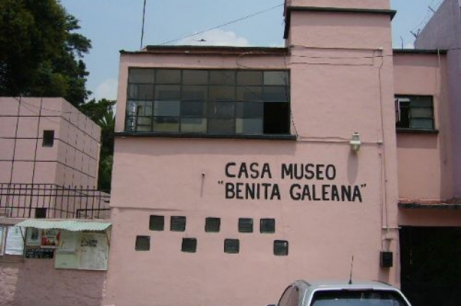

Museos en la Alcaldía Benito Juárez
En esta alcaldia solo ubicaremos un total de 8 museos, de los cuales considero destacar son los siguientes.
Museo de Arte en Azúcar México
Horarios y costos
Todos los días sólo con cita
Cuota voluntaria
Av. Cuauhtémoc 950
Col. Narvarte
CP 03020
Benito Juárez, Benito Juárez, Ciudad de México
Tels.: (55) 5523 8434
Museo Estelar
Horarios y costos
marteas a sabádo de 10 a 18 hrs.
domingos de 10 a 17 hrs.
Entrada libre
Santa Margarita 519
Col. Insurgentes San Borja
CP 03100
Benito Juárez, Benito Juárez, Ciudad de México

Casa Museo Benita Galeana
Horarios y costos
Abierto al público de lunes a viernes de 9 a 15 hrs.
Entrada libre
IAlcaldía Benito Juárez
Cda. Zutano 11
Col. Segunda del Periodista
CP 03620
Benito Juárez, Benito Juárez, Ciudad de México
Tels.: 55 5609 1687

Museo del Metro
Horarios y costos
Martes a domingo de 10:00 a 20:00 hrs.
Sistema de Transporte Colectivo Metro
Av. Revolución esq. Extremadura
Col. Insurgentes Mixcoac
CP 03920
Benito Juárez, Benito Juárez, Ciudad de México
Tels.: 55 5627 4549
Fundación María y Héctor García
Horarios y costos
Lunes a viernes de 10:30 a 15:30 hrs.
entrada gratuita.
Fundación María y Héctor García
Cumbres de Maltrata 581
Col. 2da. del Periodista
CP 03620
Benito Juárez, Benito Juárez, Ciudad de México
Tels.: 55 5532 6270, 55 5539 5393

Museo de Sitio de la Zona Arqueológica de Mixcoac
Horarios y costos
Lunes a viernes de 10:30 a 15:30 hrs.
entrada gratuita.
Fundación María y Héctor García
Cumbres de Maltrata 581
Col. 2da. del Periodista
CP 03620
Benito Juárez, Benito Juárez, Ciudad de México
Tels.: 55 5532 6270, 55 5539 5393